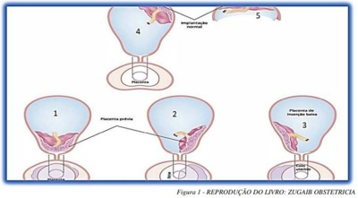
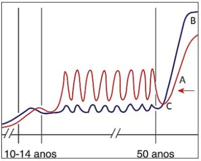
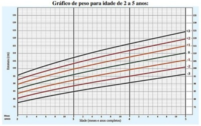
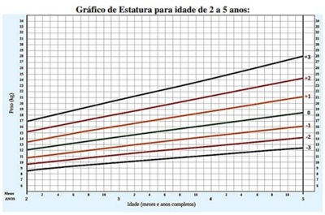
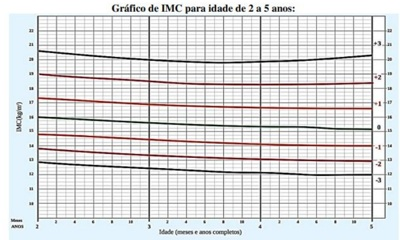

Questão 1 · Epidemiologia · 4000186260Paciente do sexo feminino de 35 anos com diagnóstico de Asma desde a infância procura o pronto atendimento por sintomas diários de tosse seca logo ao acordar associados a desconforto torácico e falta de ar. Ao exame físico, encontra- se taquipneica e à asculta pulmonar, presença de sibilos. Sobre a asma, é correto afirmar:
A É uma doença respiratória crônica pouco prevalente no Brasil e com predomínio em adolescentes.
B Para documentar o diagnóstico de asma, é recomendado realizar o exame de espirometria com broncodilatador antes de iniciar o tratamento de controle.
C O diagnóstico é realizado pelo exame de espirometria evidenciando distúrbio ventilatório obstrutivo com resposta broncodilatadora positiva.
D O montelucaste de sódio é a terapia de primeira escolha para a asma induzida pelo exercício.
Questão 2 · Espirométrica · Espirometria · Exacerbações · 4000186259Paciente do sexo masculino, 64 anos, apresenta queixa de dispneia ao caminhar 100 metros e tosse persistente com expectoração em pequena quantidade há 2 anos. Tabagista durante 30 anos, cerca de 2 maços ao dia, parou há 8 anos. No início deste ano, apresentou piora do quadro respiratório, com necessidade de internação hospitalar e uso de antibioticoterapia e corticoide endovenoso. Ao exame: eupneico, emagrecido, normocorado, sinais vitais: FR: 20 irpm, FC: 78 bpm, SO₂: 95% em ar ambiente e em repouso. Ausculta pulmonar com murmúrio vesicular diminuído em ápices e sem ruídos adventícios. Exame de espirometria com VEF1/CVF de 0.60 após o broncodilatador. Qual a classificação da DPOC e a melhor conduta inicial?
A DPOC GOLD D; tratamento com broncodilatador beta 2 agonista de ação longa associado a corticoide inalatório e azitromicina na dose de 250 mg três vezes por semana.
B DPOC GOLD B; tratamento com broncodilatador de ação longa associado à medicação de resgaste, suplementação nutricional protéica e oxigenioterapia aos esforços.
C DPOC GOLD D; tratamento com broncodilatador anticolinérgico de ação longa, fisioterapia com reabilitação e vacinação para influenza, Sars-Cov 2 e pneumocócica.
D DPOC GOLD B; tratamento com dupla broncodilatação inalatória de ação longa, fisioterapia com reabilitação e uso noturno de ventilação não invasiva com pressão.
Questão 3 · Exames complementares · Diagnóstico · 4000186258A sarcoidose é uma doença granulomatosa multissistêmica com acometimento preferencial nos pulmões. Sua causa ainda é incerta, havendo múltiplas propostas em que haja uma associação da predisposição genética com a exposição a um agente externo, como microorganismos, exposições ocupacionais e ambientais. Sobre esta patologia, assinale a afirmativa correta.
A Cerca de 50% dos indivíduos acometidos podem ser assintomáticos com diagnóstico incidental pelo exame de radiografia de tórax.
B Na maioria dos casos, não é necessário prosseguir a investigação com biópsia.
C Vias aéreas são frequentemente afetadas e por isso a tosse é um sintoma frequente associado a crises de broncoespasmo.
D Na sarcoidose estágio IV, ou seja, com achados de fibrose pulmonar, é comum ocorrer complicação de pneumotórax.
Questão 4 · Def inição · 4000186257A classificação da Injúria Renal Aguda (IRA), de acordo com o "Kidney Disease Improving Global Outcomes" (KDIGO), é importante ferramenta para prognóstico e gerenciamento do manejo da doença. Assinale a alternativa que apresenta os parâmetros atualmente utilizados, no estadiamento da IRA.
A Variação da creatinina sérica e taxa de filtração glomerular.
B Taxa de filtração glomerular e albuminúria.
C Variação do débito urinário e albuminúria.
D Variação do débito urinário e variação da creatinina sérica.
Questão 5 · Glomeruloesclerose f ocal e segmentar · 4000186256Uma paciente com proteinúria de 3,9 g/1,73 m² de superfície corpórea/dia no adulto, hipoalbuminemia e edema apresenta o diagnóstico mais provável de
A Infecção do trato urinário.
B Glomerulonefrite rapidamente progressiva.
C Síndrome nefrótica.
D Síndrome nefrítica.
Questão 6 · Colagenoses na gestação Lupus eritematoso Sistêmico LES · 4000186255Paciente jovem de 19 anos com LES, com plano de engravidar. Quais autoanticorpos podem interferir diretamente na gravidez?
A Anti SM, anti Beta 2 glicoproteína 1, anticoagulante lúpico.
B Anti Beta 2 glicoproteína 1, anti SSA/RO, anticoagulante lúpico.
C Anticoagulante lúpico, anti RNP, anti SSA/RO.
D Anti SM, anti RNP, anti SSA/RO.
Questão 7 · Manif estações articulares · Tratamento medicamentoso · 4000186254Sobre artrite reumatoide, assinale a afirmativa INCORRETA.
A Pode ocorrer acometimento pulmonar (pneumopatia intersticial).
B A rigidez matinal geralmente melhora com a atividade.
C Provas inflamatórias (PCR, VHS) frequentemente estão elevadas.
D Tem acometimento frequente das articulações interfalangianas distais.
Questão 8 · Manif estações clínicas · Diagnóstico · Tratamento · 4000186253Mulher de 19 anos apresenta febre de longa duração, astenia, perda de peso, evolui com claudicação intermitente no braço esquerdo após pequenos esforços e aumento da pressão arterial no braço direito. Exames revelam leucocitose moderada, VHS 100 mm/h e PCR 21 mg/L. O diagnóstico mais provável e o exame complementar mais indicado para elucidar o caso são:
A Doença de Takayasu/ angioRM.
B Arterite temporal/ angioRM.
C Aortite infecciosa/ arteriografia.
D Displasia fibromuscular/ arteriografia.
Questão 9 · Cuidados paliativos · 4000186252Paciente masculino, 79 anos, com câncer de pâncreas avançado e metástases hepáticas, internado na enfermaria de clínica médica para cuidados paliativos exclusivos. Está em uso de sulfato de mor na 30 mg VO de 4/4h associado à amitriptilina 25 mg à noite. Hoje, descreve dor nota 2/10, sem necessidade de medicações de resgate. Ictérico ++. Permanece acamado a maior parte do tempo, deslocando-se ao banheiro com auxílio de cadeira de rodas. Nega vômitos ou outros desconfortos agudos. O médico considera alta hospitalar. Família questiona sobre a nutrição do paciente. Dizem que ele está aceitando muito pouco da dieta oral oferecida, embora a nutricionista já tenha feito várias adaptações, atendendo às preferências do paciente. Familiares desejam a indicação de "alimentação por sonda". Qual a abordagem mais adequada a esse caso?
A Optar por período breve de dieta parenteral, tendo em vista menor taxa de complicações que a dieta enteral por SNE ou gastrostomia.
B Passar sonda nasoenteral (SNE) e iniciar dieta progressiva, pelo ganho de sobrevida proporcionado nessa situação.
C Solicitar realização de gastrostomia, cirúrgica ou por via endoscópica, uma vez que tal método resulta em melhora nutricional comparada à SNE nesse contexto.
D Explicar à família que as evidências sugerem ausência de benefício de dieta enteral tanto em tempo de vida quanto em qualidade de vida nessa situação.
Questão 10 · Cuidados paliativos · 4000186251Paciente de 67 anos, masculino, com diagnóstico de câncer de pulmão avançado com metástases ósseas, em tratamento paliativo, procura PA com queixa de piora das dores lombares. Usa cronicamente tramadol 100 mg VO de 6/6h associado à amitriptilina 25 mg à noite. Nega sintomas gastrintestinais ou respiratórios no momento. Na avalição inicial, está com fácies de dor, alerta e orientado, referindo dor classificada como 9 em 10. Emagrecido, sem outras alterações relevantes ao exame físico. Qual é a abordagem mais apropriada nesse momento?
A Usar tramadol por via intravenosa, por tratar-se de analgésico já em uso e via de administração mais efetiva, evitando efeitos colaterais dos opioides mais fortes.
B Iniciar sulfato de morfina VO a cada 4 horas, com reavaliação frequente e ajustes de dose até controle da dor.
C Iniciar fentanil por via transdérmica pela rápida absorção, poucos efeitos colaterais comparados com a via oral.
D Iniciar opioide de ação prolongada (sulfato de morfina de liberação lenta ou metadona, por ex.) para dar um melhor controle de dor com posologia mais cômoda.
Questão 11 · Prevenção Quaternária · 4000186250Paciente de 55 anos, pós-menopausada, não tabagista, hipertensa controlada e com sobrepeso, apresenta-se no consultório com edema de membro inferior esquerdo até o nível da panturrilha doloroso. Estudo com ultrassom doppler revela trombose venosa profunda (TVP). Paciente nega quadros semelhantes prévios, cirurgias recentes ou imobilidade prolongada. A paciente está preocupada com a possibilidade de ter algum câncer, já que leu na internet que existe a associação entre tromboses e malignidade. Ela informa que vai ao ginecologista todo ano, tendo recentemente feito mamogra a, Papanicolau e colonoscopia, todos normais. Não apresenta nenhuma outra queixa clínica. Quanto à investigação de malignidade nesse contexto, é correto afirmar:
A Deve realizar dosagem dos marcadores tumorais CA 19-9, CEA e CA 125, com prosseguimento da investigação caso estejam alterados.
B Deve realizar um PET scan, uma vez que a relação entre TVP e malignidade não diagnosticada é muito elevada e este é o exame mais sensível neste contexto.
C Não há indicação de investigação adicional, uma vez que a paciente já realizou os exames de rotina para seu perfil epidemiológico.
D Deve realizar um mielograma e biópsia de medula óssea, pois as neoplasias hematológicas são as mais frequentemente associadas à TVP.
Questão 12 · Tratamento · 4000186249Paciente do sexo feminino, 50 anos, teve o diagnóstico de malária por Plasmodium falciparum, realizado por gota espessa. A paciente está bem clinicamente, sem necessidade de internação. Qual é o esquema terapêutico para o tratamento desta paciente?
A Clindamicina + primaquina
B Difosfato de cloroquina + primaquina
C Difosfato de cloroquina + clindamicina
D Artemeter + lumefantrina + primaquina
Questão 13 · Diagnóstico · Manif estações clínicas · 4000186248Paciente do sexo masculino, 32 anos, previamente hígido, apresentou quadro de meningite bacteriana. Assinale a alternativa que apresenta corretamente o achado liquórico e o tratamento.
A Liquor com grande aumento da celularidade, às custas de polimorfonucleares, aumento das proteínas e diminuição da glicose. O antimicrobiano recomendado é a ceftriaxona endovenosa.
B Liquor com grande aumento da celularidade, às custas de polimorfonucleares, aumento das proteínas e diminuição da glicose. O antimicrobiano recomendado é a piperacilina/tazobactam.
C Liquor com grande aumento da celularidade, às custas de linfomononucleares, aumento das proteínas e diminuição da glicose. O antimicrobiano recomendado é a ceftriaxona.
D Liquor com celularidade normal, proteínas normais e sem diminuição da glicose. O antimicrobiano recomendado é a azitromicina.
Questão 14 · Medicações que provocam glicosúria inibidores de SGLT2 · 4000186247Homem com DM tipo 2, 71 anos, recorreu ao serviço de urgência por mal-estar geral e anúria. Estava prostrado, confuso, hipotenso, com respiração de Kussmaul. Analiticamente apresentou leucocitose, PCR de 202 mg/dL, acidose metabólica grave com aumento do hiato aniônico, glicemia de 141 mg/dL e leucocitúria. Esses resultados foram interpretados como contexto infecioso urinário grave. Após consideração dos antecedentes medicamentosos e achados clínicos, foi verificada uma cetonemia alta que estabeleceu o diagnóstico de cetoacidose diabética euglicêmica e permitiu início do tratamento dirigido com resolução da clínica. Qual medicamento o paciente estava usando que poderia justi car o quadro clínico descrito?
A Gliclazida
B Acarbose
C Sitagliptina
D Dapaglifozina
Questão 15 · Manif estações clínicas e doenças associadas · 4000186246Sobre a obesidade e a deficiência androgênica em homens com diabetes, assinale a afirmativa correta.
A O declínio da testosterona relacionado à idade independe da síndrome metabólica.
B Os mecanismos que levam à deficiência androgênica estão diretamente relacionados com excesso de gordura corporal, resistência à insulina e inflamação sistêmica.
C A síndrome metabólica é um fator fortemente relacionado ao surgimento de hipotireoidismo, o que resulta em hipogonadismo.
D A deficiência androgênica e a síndrome metabólica não estão relacionadas.
Questão 16 · Rastreamento · 4000186245Homem, 51 anos, IMC: 32,5 kg/m², vem com glicemia de jejum de 138 mg/dL. Relata astenia e sonolência. Mãe era diabética e faleceu de IAM aos 58 anos de idade. Relata estar acordando mais vezes à noite para urinar, mas seu urologista falou que era da próstata aumentada. Está preocupado com o resultado da glicemia. A conduta para definição diagnóstica é:
A Dosar nova glicemia de jejum e hemoglobina glicada pelo método HPLC ou equivalente a ele.
B Dosar glicemia de jejum, anticorpos anti-GAD e anti-IA2, peptídio-C e insulina sérica.
C O diagnóstico de diabete melito está firmado, prescrever metformina 500mg 2x/dia.
D Fazer o teste de tolerância oral com 75 g de dextrosol via oral e hemoglobina glicada.
Questão 17 · Tratamento · 4000186244Enquanto se aguarda a pericardiocentese, o cuidado imediato a ser tomado num paciente com tamponamento cardíaco é a injunção de
A nitrato para reduzir a congestão venosa.
B furosemida intravenosa.
C fluidos intravenosos.
D morfina para melhorar a dispneia.
Questão 18 · Distúrbios da condução atrioventricular · 4000186243Paciente masculino, 60 anos, tem PA = 140x85 mmHg e pesa 98 kg. Relata que não está se sentindo bem, seu ECG não tem onda P, com FC = 44 bpm e os complexos QRS ocorrem regularmente. Qual o diagnóstico para essa condição?
A Bloqueio atrioventricular de segundo grau.
B Bloqueio atrioventricular avançado.
C Bloqueio sinoatrial de segundo grau.
D Bloqueio sinoatrial de terceiro grau.
Questão 19 · Tratamento · Manif estações clínicas · 4000186242Paciente de 20 anos, do sexo masculino, chega ao pronto socorro após ser picado por cobra no tornozelo direito, há 3h, em zona rural próximo a Cuiabá. Ele chega apresentando: sonolência, prostração, vômitos, fáceis miastênica (ptose palpebral bilateral e acidez da musculatura da face), diplopia e mialgia importante. Refere pouca dor na região da picada. Quando foi passada a sonda vesical, constatou-se urina de cor escura (cor de chá preto). Esse caso trata-se de um acidente do tipo
A Botrópico.
B Crotálico.
C Laquético.
D Elapídico.
Questão 20 · Prevenção do tétano acidental · 4000186241Paciente de 55 anos, morador de zona rural, pisou em um prego enferrujado no galinheiro de sua propriedade. Procurou a UBS dois dias após o acidente devido à dor no local. Ao exame físico, observam-se sinais vitais normais. Há moderada hiperemia ao redor do ferimento. Ao consultar o cartão de vacina do paciente, constata-se que a vacinação para tétano está em dia e sua última dose foi há 6 anos. Em relação à profilaxia de tétano, a conduta adequada neste caso é:
A Realizar soro e vacina antitetânica.
B Aguardar completar 10 anos para fazer a dose de reforço da vacina.
C Realizar soro antitetânico.
D Realizar uma dose de reforço da vacina antitetânica.
Questão 21 · Pneumotórax Hipertensivo · 4000186240Paciente de 22 anos do sexo masculino sofreu acidente de moto e chega ao pronto socorro trazido pelo Samu. Na sua chegada, apresentava rebaixamento do nível de consciência (Escala de Coma de Glasgow = 06). Observava-se que a via aérea estava pérvia, mas apresentava taquicardia (frequência cardíaca de 150 bpm) e hipotensão arterial (PA = 80/40 mmHg). Na ausculta pulmonar, o murmúrio vesicular estava abolido à direita associado a hipertimpanismo do mesmo lado. O abdome estava ácido e plano. Não apresentava sinais clínicos de fraturas de bacia e nem de membros superiores e inferiores. Seguindo o protocolo do ATLS, a primeira conduta nesse caso é:
A Colocar 2 acessos calibrosos para hidratação vigorosa com cristaloide.
B Fazer um raio x de tórax.
C Colocar uma agulha calibrosa na cavidade pleural à direita.
D Imediata intubação orotraqueal.
Questão 22 · O Choque hemorrágico · Avaliação inicial do paciente em choque · 4000186239Paciente de 33 anos do sexo feminino sofreu acidente de trânsito (colisão moto-caminhão) e chega ao pronto socorro trazida pelo Samu. Na sua chegada, apresentava-se lúcida e orientada (Escala de Coma de Glasgow = 15). Também se observou que a via aérea estava pérvia, mas apresentava taquicardia (frequência cardíaca de 155 bpm) e hipotensão arterial (PA = 84/45 mmHg). Na ausculta pulmonar, o murmúrio vesicular era normal e simétrico bilateralmente. O abdome estava ácido, plano e sem dor à palpação. Foram observados sinais clínicos de fratura de bacia. Os membros superiores e inferiores não tinham sinais clínicos de fratura. Seguindo o protocolo do ATLS, a primeira conduta nesse caso é:
A Realizar imediatamente tomografia de tórax, abdome e pelve.
B Ofertar oxigênio suplementar e colocar 2 acessos calibrosos para hidratação vigorosa com cristaloide.
C Encaminhar paciente imediatamente para fixação da bacia no centro cirúrgico.
D Encaminhar paciente imediatamente para laparotomia exploradora no centro cirúrgico.
Questão 23 · Indicações · 4000186238Paciente de 8 anos de idade do sexo masculino foi bicado pelo papagaio de estimação da família na palma da mão direita. Foi um ferimento profundo que provocou sangramento moderado por 10 minutos. Qual a conduta para a pro laxia de raiva?
A Indicar 4 doses de vacina para raiva.
B Não há indicação para prescrever vacina.
C Indicar 2 doses de vacina para raiva e observar o animal por 10 dias.
D Observar o animal por 10 dias.
Questão 24 · Apresentação Clínica · Exames Diagnósticos · 4000186237Paciente de 65 anos com quadro de icterícia progressiva há 30 dias associado à perda ponderal de 7 kg no período. Ao exame físico ictérico +++/4, sinal de Courvoisier-Terrier presente. Não apresenta a Tríade de Charcot muito menos a Pentade de Reynold. Qual a hipótese diagnóstica e o exame mais adequado para confirmar a suspeita?
A Pancreatite Aguda; Colangiorressonância.
B Hepatocarcinoma; Biópsia Hepática.
C Tumor de Vesícula Biliar; CPRE (Colangiopancreatografia retrógrada endoscópica).
D Tumor periampular; TC de abdome com contraste.
Questão 25 · Epidemiologia · Introdução · 4000186236Paciente de 45 anos foi diagnosticado como pertencente à família HNPCC (CCNP). Qual mutação é caraterística dessa síndrome?
A Mismatch Repair
B APC
C RAS
D p53
Questão 26 · Acalásia e o Câncer de Esôf ago · 4000186235Paciente de 55 anos, portador de câncer de esôfago, foi submetido à esofagectomia trans-hiatal. O cirurgião optou pela utilização do estômago para reconstruir o trânsito. Qual artéria obrigatoriamente ele tem que preservar para não haver isquemia do tubo gástrico?
A Artéria gástrica direita
B Artéria gástrica esquerda
C Artéria gastroepiploica direita
D Artéria gastroepiploica esquerda
Questão 27 · Diagnóstico · Apresentação Clínica · 4000186234Paciente de 45 anos, portador de adenocarcinoma gástrico, foi submetido a uma gastrectomia total. Estadiamento patológico pT3NxM0. Qual tratamento adjuvante é mais adequado?
A Reoperar o paciente
B Tratamento paliativo
C Quimioterapia exclusiva
D Quimioterapia e radioterapia
Questão 28 · Câncer de pele · 4000186233O carcinoma de Células de Merkel, também chamado de carcinoma neuroendócrino da pele, é um tipo muito raro de câncer que se forma quando as células de Merkel crescem fora de controle. Sobre essa doença, é correto afirmar:
A Não tem relação com exposição solar.
B Pode ser tratado em combinação com cirurgia, radioterapia, quimioterapia e imunoterapia.
C Ao contrário do melanoma, não há risco de disseminações linfonodais.
D Acomete em maior frequência crianças e jovens devido a uma mutação germinativa específica.
Questão 29 · Manif estações Clínicas · 4000186232A dor abdominal é uma das principais queixas em um cenário de atendimento em urgência/emergência. Diversas patologias abdominais podem cursar com abdome agudo. Portanto, nesse cenário, torna-se importante o conhecimento da apresentação típica dessas patologias. Sobre o assunto, analise as afirmativas abaixo. I. A pancreatite aguda apresenta-se com dor em andar superior do abdome, podendo haver irradiação para região dorsal e associação com vômitos. II. A dor abdominal causada pela apendicite aguda caracteriza-se por iniciar de modo súbito e intenso em quadrante inferior direito do abdome. III. A úlcera duodenal perfurada causa dor de evolução lenta, tornando-se intensa após algumas horas, habitualmente com poucas alterações ao exame físico abdominal. IV. A gastroenterocolite aguda cursa com dor abdominal difusa, habitualmente associada a episódios de vômitos e diarreia. Está correto o que se afirma em
A II e IV, apenas.
B I e III, apenas.
C I, II, III e IV.
D I e IV, apenas.
Questão 30 · Ultrassonograf ia Transabdominal · 4000186231Médico atende no ambulatório uma mulher de 41 anos, com sobrepeso e dislipidemia, com quadro clínico compatível com episódios de cólica biliar nos últimos 3 meses. Ele pensa em colecistopatia calculosa como principal hipótese diagnóstica. No último episódio, há 2 semanas, realizou tomogra a computadorizada de abdome sem contraste, mostrando vesícula biliar e vias biliares dentro da normalidade. Para prosseguir na investigação desse caso, qual exame deve ser solicitado?
A Ultrassonografia de abdome total
B Tomografia computadorizada de abdome total com contraste endovenoso
C Raio-X abdome
D Colangiopancreatografia retrógrada endoscópica (CPRE)
Questão 31 · Exames de Imagem · 4000186230Homem de 61 anos apresenta quadro de dor em quadrante inferior esquerdo do abdome há 4 dias, associado à febre (Temperatura axilar 38,1ºC) e episódios de diarreia, sem muco ou sangue. Refere também indisposição e hiporexia nesse período. Ao exame físico abdominal, encontra-se dor à palpação super cial e profunda, massa palpável em fossa ilíaca esquerda. O hemograma apresenta leucocitose e o exame de urina não evidencia alterações significativas. Diante do quadro, qual exame deve ser solicitado neste momento para confirmação diagnóstica?
A Tomografia computadorizada de abdome total
B Colonoscopia
C Enema opaco
D Ultrassonografia de abdome total
Questão 32 · Manif estações Clínicas e Exame Físico · 4000186229Paciente jovem, masculino, com história sugestiva de apendicite aguda, apresenta ao exame físico abdominal dor à palpação em fossa ilíaca direita, associada à descompressão brusca dolorosa, além de dor em quadrante inferior direito quando se palpa o quadrante inferior esquerdo. Estão presentes, respectivamente, os sinais de
A Blumberg e Rovsing.
B Rovsing e Blumberg.
C Blumberg e Obturador.
D Obturador e Rovsing.
Questão 33 · Apresentação Clínica · Exame Físico e História Clínica · 4000186228Homem de 68 anos deu entrada no setor de urgência com quadro de distensão abdominal, vômitos e parada de eliminação de atos há 2 dias. Ao exame físico, foi evidenciada distensão abdominal, com hipertimpanismo e sinais de irritação peritoneal à palpação. Em região inguinal direita, há massa palpável, não redutível. Realizou tomogra a de abdome que demonstrou ar livre em cavidade abdominal e sinais de hérnia inguinal direita, em região medial aos vasos epigástricos inferiores. A hérnia desse paciente pode ser caracterizada como
A direta e encarcerada.
B direta e estrangulada.
C indireta e estrangulada.
D indireta e encarcerada.
Questão 34 · Classif icação de Nyhus · 4000186227Existem alguns sistemas de classificação de hérnias inguinais. Um sistema simples e amplamente usado é a classificação de Nyhus. Um paciente que apresenta anel inguinal interno dilatado, com destruição da fáscia transversal do triângulo de Hesselbach, tem o diagnóstico de hérnia, classificada como Nyhus
A I.
B III-A.
C II.
D III-B.
Questão 35 · Neoplasia Colorretal · 4000186226Paciente de 64 anos dá entrada na sala de emergência com quadro de distensão abdominal importante com parada de eliminação de fezes e atos há 4 dias. Refere que foi diagnosticado recentemente com câncer de reto baixo e vai iniciar quimioterapia e radioterapia neoadjuvantes. Supondo que o paciente tenha a válvula ileocecal competente, qual é o segmento do intestino grosso com maior risco de perfuração?
A Cólon transverso.
B Cólon sigmoide.
C Ceco.
D Cólon ascendente.
Questão 36 · Classif icação de Forrest · 4000186225Paciente masculino, 45 anos, tabagista e etilista, dá entrada em sala de emergência devido o quadro de hematêmese. Foi realizado manejo inicial, e solicitada endoscopia digestiva alta, a qual evidenciou úlcera em fundo gástrico com vaso visível sem sangramento ativo. De acordo com os dados da endoscopia, qual a classificação de Forrest?
A IIA
B IIB
C IIC
D IA
Questão 37 · Préeclâmpsia com sinais de gravidade · 4000186224Paciente chega ao pronto atendimento com idade gestacional de 34 semanas com epigastralgia e cefaleia intensa. Ao exame físico, apresenta PA de 160 x 100 mmHg, edema de face e hiperre exia. Qual a hipótese diagnóstica e conduta para o caso, respectivamente?
A Pré-eclâmpsia grave e prescrição de sulfato de magnésio seguida da interrupção da gestação após 1 hora.
B Pré-eclâmpsia grave e prescrição de sulfato de magnésio seguida da interrupção da gestação em 24 h.
C Iminência de eclâmpsia e prescrição de sulfato de magnésio seguida da interrupção da gestação em 24 h.
D Iminência de eclâmpsia e prescrição de sulfato de magnésio seguida de interrupção da gestação após 1 hora.
Questão 38 · Criterios diagnósticos da préeclampsia · 4000186223Na pré-eclâmpsia, os seguintes parâmetros elevados são marcadores de comprometimento da função renal:
A proteinúria e ureia.
B ácido úrico e ureia.
C proteinúria e creatinina.
D ácido úrico e desidrogenase láctica.
Questão 39 · Epidemiologia e etiologia da RPM · 4000186222Paciente chega ao pronto atendimento com idade gestacional de 34 semanas com perda de líquido em grande quantidade. Ao exame especular, evidenciada amniorrexe prematura. Dentre as possíveis etiologias a causa mais frequente é
A vaginose bacteriana.
B infecção do trato urinário.
C infecção por Chlamydia trachomatis.
D incompetência istmocervical.
Questão 40 · Diagnóstico · 4000186221Em relação ao diagnóstico diabetes gestacional, considerando uma paciente com glicemia de jejum menor que 92 mg/dL no primeiro trimestre, quando se deve realizar a curva glicêmica e qual resultado é considerado normal, respectivamente?
A entre 28-32 semanas e TOTG jejum < 92 mg/dL, Ih <160 mg/dL, 2h <153 mg/dL.
B entre 28-32 semanas e TOTG jejum < 105 mg/dL, Ih <180 mg/dL, 2h <153 mg/dL.
C entre 24-28 semanas e TOTG jejum <92 mg/dL, 1h <195 mg/dL, 2h <153 mg/dL.
D entre 24-28 semanas e TOTG jejum < 92 mg/dL, 1h <180 mg/dL, 2h <153 mg/dL.
Questão 41 · Complicações maternas · 4000186220Paciente com diagnóstico de diabetes gestacional em uso de insulina chega ao pré-natal com 35 semanas, apresentando vários episódios de hipoglicemia. Nega mudança na dieta e refere o uso correto da insulina. A melhor hipótese para o caso é:
A insuficiência placentária e redução na produção de estrogênio e progesterona
B insuficiência placentária e redução na produção de prolactina.
C insuficiência placentária e redução na produção de TSH e T4 livre
D insuficiência placentária e redução na produção de glucagon.
Questão 42 · Primeiro periodo dilatação · O trabalho de parto e o parto · Avaliação inicial da parturiente · 4000186219Paciente com idade gestacional de 32 semanas chega ao pronto atendimento com duas contrações de 40 segundos e 10 minutos. Ao exame físico, apresenta colo dilatado para 3 cm, bolsa íntegra e BCF de 140 bpm. O feto apresenta diagnóstico de trissomia do cromossomo 18. A melhor conduta para o caso é:
A acompanhamento ambulatorial.
B internação e corticoterapia.
C internação e tocólise
D internação e conduta expectante
Questão 43 · Fase ativa prolongada · 4000186218Clinicamente, o estudo do parto analisa três fases principais. Marque a alternativa que apresenta a associação correta entre a fase do trabalho de parto e o fenômeno ou conduta descrito.
A Na chamada fase de expulsão, ocorre a formação do canal do parto, pelo apagamento do colo e dilatação da cérvice.
B Na assistência à fase de dilatação, a incoordenação uterina será caracterizada pela verificação na dinâmica uterina com contrações curtas e irregulares.
C A fase de secundamento tem seu início quando a dilatação está completa e se encerra com a saída do feto.
D Por ocasião da expulsão, a paciente deverá ser colocada na posição de Laborie-Duncan, que objetiva ampliar o estreito médio da bacia.
Questão 44 · Classif icação · Tratamento · 4000186217Paciente deu entrada no pronto atendimento de obstetrícia com gestação de 32 semanas e sangramento vaginal abundante, indolor, sem sinais de hipertonia e com BCF de 132 bpm. Realizado o exame de ultrassonogra a obstétrica na urgência, foi evidenciada placenta prévia. Com base no caso descrito e no esquema do Zugaib, marque a afirmativa correta.

A Se a placenta prévia apresentar implantação do tipo 1 da figura acima, a avaliação para possível presença de acretismo placentário será facultativa, pois a conduta já está definida.
B Se a paciente apresentar implantação de placenta conforme o esquema 3 da figura acima, deverá ser indicada cesariana imediata.
C Caso a paciente apresente implantação da placenta conforme esquema 1 da figura, estará caracterizada placenta prévia centro total e contraindicada a realização de parto vaginal.
D Se a placenta prévia for de implantação do tipo 2 do esquema da figura acima, os episódios de sangramento na gestação e o parto ocorrerão somente na fase expulsiva do parto vaginal
Questão 45 · Aborto inf ectado · 4000186216Paciente MSN, 23 anos, solteira, gesta 1 para 0 aborto-0, deu entrada na emergência obstétrica com relato de atraso menstrual de 10 semanas, dores pélvicas e abdominais em cólicas. Hipertermia, sangramento vaginal discreto acompanhado de saída de material purulento pelo canal vaginal. Útero doloroso à palpação. No toque vaginal, o colo uterino é pérvio doloroso à mobilização. No exame especular, observada saída de material purulento pelo canal cervical. O diagnóstico e tratamento corretos são:
A Abortamento incompleto e possível infecção; o tratamento que se impõe é a histerectomia, pois trata-se de uma forma disseminada refratária ao tratamento clínico.
B Ameaça de aborto e infecção; o tratamento é clínico apenas, e consiste, principalmente, em tratar a hipovolemia e combate à infecção com antibióticos de amplo espectro.
C Aborto retido e infecção; o tratamento é expectante até a eliminação de restos ovulares e a necessidade de esvaziamento uterino por meio de curetagem uterina apenas quando ocorrer falha no tratamento proposto.
D Aborto infectado; o tratamento, na evidência de restos ovulares ao ultrassom, se impõe a necessidade de esvaziamento uterino por meio de curetagem ou aspiração manual intrauterina (AMIU) e antibioticoterapia.
Questão 46 · Candidíase vulvovaginal recorrente · 4000186215Cândida albicans é a mais importante espécie de levedura encontrada no trato genital feminino com prevalência de 70 a 90%, e cerca de 5% das pacientes apresentarão episódios de recorrência. À recorrência na candidíase vulvovaginal também denota infecção secundária de outras enfermidades, dentre estas:
A Hipertensão arterial, insuficiência cardíaca.
B Diabetes mellitus, imunossupressão, aids.
C Epilepsia, hipertireoidismo, aids.
D Enterocolite, hepatite C, hemofilia
Questão 47 · Diagnóstico da síf ilis · 4000186214Considerando o rastreamento de sífilis no pré-natal, analise as afirmativas. I. O rastreamento da doença é recomendado na primeira consulta de pré-natal, entre 28 e 32 semanas de gestação, e no período periparto com o FTA-Abs. II. Se o VDRL for positivo, a confirmação diagnóstica deve ser realizada com teste treponêmico, que detecta anticorpos específicos contra o treponema. III. O exame MHA-TP será útil no seguimento terapêutico por meio do acompanhamento dos níveis plasmáticos. É considerada resposta adequada ao tratamento a queda dos títulos em quatro vezes. IV. O VDRL toma-se positivo cinco a seis semanas após a infecção, razão pela qual, habitualmente, não se encontra positivo na fase de manifestação clínica do cancro. Testes na janela de positivação do VDRL podem apresentar positividade com os testes treponêmicos. Estão corretas as afirmativas
A II e III
B I e III
C II e IV
D I e IV
Questão 48 · Ciclo uterino · Fases do ciclo menstrual · Ciclo ovariano · 4000186213Após a menopausa, o ovário contém apenas alguns folículos. Como resultado, ocorre a cessação dos ciclos ovulatórios. Como consequência do desajuste desse retro controle, se instala o per l de hormônios e sintomas característicos em mulheres pós-menopáusicas. Analise gráfico. Assinale a afirmativa correta.

A Em “C” observa-se a queda da inibina e estradiol e perda da alça de feedback negativo sobre o FSH
B Em “C” observa-se a elevação da inibina e queda do estradiol e consequente perda do feedback positivo sobre o LH.
C Em “C” observa-se a elevação da inibina e perda da alça de feedback negativo sobre o estradiol
D Em “C” observa-se a queda da inibina e perda da alça de feedback positivo sobre a progesterona
Questão 49 · Tumores ovarianos benignos · 4000186212MAS, 26 anos, nuligesta, ciclos menstruais regulares, sem queixas ginecológicas, apresenta imagem ultrassonográ ca em ovário esquerdo, cística com medida de 12,5 x 10,0 x 9,5 cm, volume de 593 cm³, sem aumento de uxo ao doppler, ausência de sinais de espessamento de capsula, septações ou áreas cístico sólidas. Diante do quadro, é correto afirmar:
A Devido ao tamanho, volume e características ultrassonográficas, trata-se de um cisto com alto potencial de malignidade, sendo necessárias avaliação e conduta da equipe de oncologia.
B Solicitação e avaliação dos marcadores tumorais é fundamental na definição da conduta terapêutica.
C Pelas características ultrassonográficas, trata-se de um cisto simples folicular, sendo a inibição da ovulação com contraceptivos a conduta ideal.
D Trata-se de um cisto volumoso com características de benignidade, porém com indicação de tratamento cirúrgico devido ao tamanho e volume e risco de torção ovariana.
Revisar: possível letra faltando em enunciado
Questão 50 · Mecanismo de ação · Benef ícios · Quadro Clínico · 4000186211CMA, 45 anos, GIII PIII A0, 3PC + Laqueadura tubária, refere ciclos regulares, duração de 05 dias, porém com queixa de dismenorreia progressiva com piora nos últimos 04 anos, de forte intensidade nos três primeiros dias, associada com aumento de uxo menstrual e duração de 05 dias. Apresenta USG Transvaginal com útero vol. 150 cm³ globoso, assimetria de paredes uterinas, espessamento difuso da zona juncional de 14 mm e focos hiperecogênicos, endométrio de 12 mm, ovário direito vol. 8 cm³ e ovário esquerdo vol. 12 cm³. Diante desse resultado, o diagnóstico e tratamento inicial são:
A Adenomiose e histerectomia total.
B Endometriose e início terapia hormonal.
C Adenometriose e inserção de DIU Hormonal.
D Endometriose e histerectomia laparoscópica.
Questão 51 · Histeroscopia · 4000186210RSS, 74 anos, menopausada desde os 45 anos, sem TH ( Terapia hormonal), procura UBS com queixa de sangramento vaginal em pequena quantidade um episódio, secreção serosanguinea, sem cólicas, sem dores, negando atividade sexual no período. Solicitados exames, apresenta ultrassonogra a transvaginal com útero vol. 48 cm³, endométrio de 20 mm, ovários não visualizados. Diante do quadro, a conduta adequada será:
A Expectante, uma vez que foi episódio único e endométrio se apresentar atrófico.
B Histeroscopia diagnóstica, devido ao sangramento uterino pós-menopausa.
C Histeroscopia cirúrgica e ablação endometrial, evitar recidiva do sangramento.
D Histerectomia total, devido a risco de neoplasia endometrial.
Questão 52 · Tratamento cirurgico · Fator uterino · Tratamento clínico · 4000186209Paciente nuligesta, com quadro de infertilidade, apresenta, dentre outros exames, uma ultrassonogra a com útero miomatoso, volume de 291 cm³ e imagem nodular única de 8,5 x 6,0 x 7,5 cm³, transmural‚ endométrio 11mm, ovários com volume e aspectos normais. Diante do quadro, qual conduta está desaconselhada para o tratamento da infertilidade?
A Miomectomia laparoscópica
B Miomectomia abdominal
C Uso de Análogo de GNRH e miomectomia posterior
D Embolização uterina
Questão 53 · Gerais · 4000186208SFS, 20 anos. procurou UBS. para contracepção, nuligesta, sem comorbidades, ciclos menstruais regulares, exames ginecológico, laboratoriais e de imagens (Ultrassonogra a transvaginal) normais, iniciou há 40 dias o uso de contraceptivo hormonal combinado oral (gestodeno 75 mcg +etinilestradiol 20 mcg). Retoma a UBS devido a sangramento em pequena quantidade no uso da primeira cartela por 04 dias. Nesta nova cartela, está no quinto comprimido sem sangramento, mas manifestando desejo de troca da medicação por medo de sangrar novamente e o contraceptivo não estar lhe protegendo como o esperado. Qual a orientação adequada para a paciente?
A Orientar que o sangramento de escape são comuns nos três primeiros meses de uso, e a presença dele não significa que o contraceptivo está com menor eficácia e que a paciente corre risco de gestação.
B O sangramento de escape é sinal de que a paciente não se adaptou ao contraceptivo e deve ser trocado o mais rápido possível, pois o risco de gestação se torna maior com o maior tempo de uso.
C É necessária a troca do contraceptivo de imediato, com os mesmos princípios ativos, porém com uma dose hormonal maior, o que irá trazer maior segurança contraceptiva à paciente
D Não há necessidade de troca do contraceptivo no momento, mas, até que o sangramento de escape não cesse, é recomendada uma outra forma de proteção contraceptiva.
Questão 54 · Quadro clínico · 4000186207PAS, 25 anos, menarca aos 12 anos, nuligesta, vem em consulta ambulatorial com queixa de dismenorreia progressiva de forte intensidade com duração de 05 dias, com piora importante da qualidade de vida, cando acamada, sendo necessário medicação endovenosa no primeiro e segundo dia do ciclo, devido à intensidade da dor. Refere associada dispareunia de profundidade, evitando atividade sexual devido à dor. Relata que já consultou com três ginecologistas, sendo realizados ultrassonografias e exames de rotinas sempre todos normais, recebendo como diagnóstico dismenorreia primária. Diante do quadro, NÃO é correto afirmar:
A Trata-se de sintomas bem característicos de endometriose, porém a investigação para a patologia não foi realizada de forma correta
B Pela clínica descrita, trata-se realmente de uma endometriose, devendo ser tratada de imediato, devido à clinica importante de dor da paciente
C Os principais exames a serem realizados para diagnóstico da patologia, seria uma ultrassonografia com preparo intestinal para endometriose e/ou ressonância magnética
D O tratamento adequado deverá ser realizado após o diagnóstico correto da patologia, podendo ele ser clínico ou cirúrgico.
Questão 55 · Quadro clínico · 4000186206Sobre infecção urinária na infância, é correto afirmar:
A O tratamento deve ser instituído após o resultado da urocultura nos pacientes com infecção urinária febril.
B O principal fator predisponente é o uso indiscriminado de antibióticos por quadros respiratórios, o que seleciona a microbiota da criança.
C O aumento da contagem de leucócitos na urina tem valor preditivo positivo para o diagnóstico, quando a amostra é coletada por saco coletor.
D É causa importante de febre sem sinais localizatórios, dessa forma, a suspeição clínica precoce favorece o tratamento.
Questão 56 · Métodos diagnósticos · Def inição · Sinais e sintomas · 4000186205Um médico é chamado para avaliar recém-nascido a termo, peso nascimento 2.200g, com 6 horas de vida em alojamento conjunto devido à sonolência. Aferida glicemia capilar: 36 mg/dL. Qual a melhor conduta?
A Ofertar fórmula infantil visto que paciente está sonolento devido a choque obstétrico.
B Encaminhar paciente à UTI neonatal para início de hidratação venosa com oferta de glicose endovenosa.
C Estimular aleitamento materno com suporte de enfermagem e banco de leite materno.
D Iniciar dieta por sonda com leite materno ordenhado pelo risco de broncoaspiração.
Questão 57 · Linf adenite Reacional inf lamatória · 4000186204A criança possui mais tecido linfoide que o adulto e apresenta resposta mais exacerbada aos antígenos externos, o que contribui para a incidência aumentada de linfadenomegalias na infância. Sobre as linfadenomegalias, é correto afirmar:
A O linfoma não Hodgkin cursa com linfadenomegalia localizada, volumosa e assimétrica em relação ao lado contra lateral.
B Os linfonodos dolorosos se devem à vasodilatação de liberação de bradicininas e são exclusivos de quadros infecciosos.
C Aumento dos linfonodos occipitais em crianças menores são sinais de alerta para doenças linfoproliferativas, como os linfomas.
D A adenopatia reacional é a causa mais comum de aumento do tamanho dos linfonodos e surge devido ao aumento das células intrínsecas do tecido linfoide.
Questão 58 · Incidência e Prevalência · 4000186203Hérnias são protusões de vísceras abdominais através de um orifício herniário e constituem a patologia cirúrgica mais comum na faixa etária pediátrica. Sobre as hérnias na infância, é correto afirmar:
A O comprometimento vascular do conteúdo herniado pode causar edema local e dor, o que sugere intervenção cirúrgica imediata.
B No sexo feminino, é comum a presença de trompa e ovário no saco herniário, o que indica correção na urgência.
C A redução manual da hérnia inguinal exclui a necessidade de intervenção cirúrgica.
D A palpação de massa palpável firme da região inguinal que se estende até os grandes lábios não confirma a herniação, sendo necessária confirmação por ultrassonografia.
Questão 59 · Duração do aleitamento materno · Idade de introdução e f requência · 4000186202Lactente, 5 meses, em aleitamento materno exclusivo e em uso de vitamina D diária, que, após quadro febril acompanhado de vômitos e diarreia, iniciou uso de sais minerais para suplementação e reidratação oral. Não está fazendo ingesta de nenhum outro tipo de leite e não iniciou a introdução alimentar. Como se classifica sua alimentação?
A Inadequada, em aleitamento materno misto ingerindo sais de reidratação oral.
B Adequada, em aleitamento materno exclusivo.
C Inadequada, o início da vitamina D seria após 6 meses.
D Adequada, em aleitamento materno complementado.
Questão 60 · Passos iniciais · 4000186201Em relação às atuais diretrizes de reanimação do recém-nascido ≥ 34 semanas em sala de parto, marque V para as afirmativas verdadeiras e F para as falsas. ( ) No RN com boa vitalidade, recomenda- se clampear o cordão no mínimo 60 segundos após o nascimento. ( ) No RN que não está com boa vitalidade ao nascer, sugere-se fazer o estímulo tátil no dorso, de modo delicado e no máximo duas vezes, para ajudar a iniciar a respiração antes do clampeamento imediato do cordão. ( ) Se, ao nascimento, o RN ≥ 34 semanas está respirando ou chorando e o tônus muscular está em exão, independentemente do aspecto do líquido amniótico, ele apresenta boa vitalidade e deve continuar em contato pele-a-pele junto da parturiente depois do clampeamento do cordão umbilical. ( ) A aspiração de vias aéreas não deve ser realizada de rotina e, sim, reservada somente ao RN com excesso de secreções nas vias aéreas. Assinale a sequência correta.
A F, F, V, F
B V, F, F, F
C F, V, F, V
D V, V, V, V
Questão 61 · Epidemiologia da anemia f alcif orme · Introdução à anemia f alcif orme · 4000186200Lactente, cujos pais são portadores de traço falciforme, vem para primeira consulta de puericultura com resultado do teste do pezinho na pesquisa de hemoglobinopatias apresentando padrão HbAF. Ao constatar esse padrão de hemoglobina, o que se conclui?
A Filho de pais com traço falciforme apresentando traço falciforme.
B Filho de pais com traço falciforme apresentando anemia falciforme.
C Filho de pais com traço falciforme apresentando padrão normal.
D Não deve ser filho do casal com esse resultado.
Questão 62 · Quadro clínico · Diagnóstico · Epidemiologia · 4000186199Em todas as doenças alérgicas, é fundamental que uma boa anamnese seja realizada. Em relação às alergias alimentares (AA), assinale a afirmativa INCORRETA.
A Época de aparecimento dos sintomas: nas alergias mediadas por IgE, os sintomas aparecem em até 12 horas após a introdução do alimento.
B Idade de aparecimento dos sintomas: nas APLV, a maior parte das crianças apresenta as manifestações clínicas nos primeiros 2 anos de vida.
C Repetição do sintoma quando da re-exposição: aspecto significativo para uma AA. É fundamental que haja reprodutibilidade do sintoma cada vez que houver a ingesta do alimento suspeito.
D Quantidade de alimento ingerida: trata-se de um aspecto fundamental, pois pode ser variável entre os pacientes, sendo que alguns deles reagem a pequeníssimas porções (traços do alimento) e outros a porções um pouco maiores.
Questão 63 · Sigilo prof issional · Segurança das crianças e adolescentes · 4000186198Em uma consulta de uma adolescente com idade de 14 anos e 6 meses, existem situações nas quais o sigilo deve ser mantido. Assinale a alternativa que apresenta situações em que deve manter sigilo.
A Conflitos com identidade de gênero, gravidez, autoagressão, relação abusiva emocional.
B Homossexualidade, sinais de dependência química, ideias suicidas.
C Uso e abuso de drogas, não adesão ao tratamento indicado, violência sexual.
D Orientação sexual, experimentação sexual, uso de anticonceptivo.
Questão 64 · Maturação sexual no sexo f eminino · 4000186197Um adolescente masculino de 13 anos e 4 meses procura o ambulatório na UBS, acompanhado de sua mãe que está preocupada com o crescimento do lho, pois sua lha, de 12 anos, já menstruou e está com 162 cm. Após anamnese detalhada, o médico verifica que o adolescente está com estatura de 157 cm e peso corporal de 50 kg. Portanto, no Z escore da curva de crescimento e IMC dentro do canal familiar e estatura alvo. Estágio puberal P2G2. Assinale a melhor conduta para o caso.
A Tranquilizar a mãe que seu filho está dentro dos parâmetros normais para a faixa etária e canal familiar, não necessitando mais voltar de retorno. Porém marcar consulta para sua filha já que está desenvolvendo puberdade precoce, uma vez que já menstruou e será necessária uma investigação rigorosa.
B Alertar a mãe que será necessário auxílio do médico especialista, já que sua irmã está mais alta e ele, sendo do sexo masculino, já perdeu a oportunidade de crescer. Solicitar todos os exames de triagem para baixa estatura, inclusive, Raio X de mãos e punhos para idade óssea. Marcar retorno, se necessário.
C Tranquilizar a mãe e o paciente, já que o adolescente está na fase inicial do processo de puberdade e que o estirão do menino acontece depois da menina com mais velocidade e pico máximo maior, e que acontecerá nos próximos estágios puberais. Marcar retorno em torno de 6 meses para verificar velocidade de crescimento e orientações.
D Alertar a mãe e o adolescente, já que o paciente está com o avanço puberal para a idade cronológica e poderá ficar baixinho comparando com sua irmã. Deve ser realizado Raio X de mãos e punhos para idade óssea, tomografia de crânio e exames complementares, o mais rápido possível. Marcar retorno no máximo em 2 meses para verificar velocidade de crescimento e orientações.
Questão 65 · Gráf icos OMS Classif icação nutricional · 4000186196Paciente, masculino, 3 anos e 1 mês de vida, vem para consulta de puericultura. Ao realizar sua antropometria, apresenta estatura de 92cm e peso 12kg. Sem nenhuma vacina em atraso, alimentação adequada, boas condições de higiene. Analisando as curvas de crescimento da nova Caderneta de Saúde da Criança, como classificar sua estatura, peso e IMC para idade?



A Estatura adequada para idade; Peso adequado para idade; IMC de Eutrofia. IMC de Eutrofia.
B Baixa estatura para idade; Baixo peso para idade; IMC de Magreza.
C Baixa estatura para idade; Muito baixo peso para idade; IMC de Magreza.
D Estatura adequada para idade; Elevado peso para idade; IMC de Risco de sobrepeso.
Questão 66 · Importância do aleitamento materno · 4000186195NÃO é argumento a favor do aleitamento materno:
A Redução de morbidade por rinite alérgica.
B Redução do desenvolvimento orofacial.
C Redução de diabetes tipos 1 e 2.
D Redução de leucemia.
Questão 67 · Tratamento Complicações · Complicações · 4000186194Paciente, 5 anos de idade, apresentando quadro de tosse e febre com duração de 1 dia. Família procurou pronto atendimento, prescritos apenas sintomáticos e feita orientação de retorno em 72 horas, caso não cessasse a febre. Família, no entanto, retorna, no dia seguinte, pois a criança está apresentando tosse produtiva e emetizante, que tem di cultado a aceitação alimentar e queda do estado geral. O médico ausculta crepitação na base pulmonar direita, solicita raio-X de tórax que confirma presença de consolidação no lobo médio do pulmão direito e indica internação pela di culdade de aceitação de medicamento via oral. A prescrição foi de ampicilina 200 mg/kg/dia. Criança estava evoluindo com melhora do quadro após 48 horas de internação, mas, ao ser avaliada no 3º dia de internação, apresenta-se taquipneica (antes estava eupneica) e com tiragem subcostal. Qual alternativa apresenta a conduta para o caso?
A Considerar resistência antimicrobiana e modificar esquema antimicrobiano para Cefepime e Vancomicina.
B Considerar resistência antimicrobiana e modificar esquema antimicrobiano para Ceftriaxona e Oxacilina.
C Realizar raio-X de tórax para identificar possível complicação da pneumonia com derrame pleural e modificar esquema antimicrobiano para Ceftriaxona e Oxacilina.
D Realizar raio-X de tórax para identificar possível complicação da pneumonia com derrame pleural e, caso presente, avaliar indicação de toracocentese de alívio e manter esquema
Questão 68 · Tratamento · Complicações · 4000186193Paciente, 8 anos de idade, com quadro de febre há 4 dias, chegando a 39ºC, intermitente, com necessidade de uso de antipirético a cada 6 a 8 horas. Família procurou pronto atendimento no primeiro dia do quadro e, por não haver outros sintomas associados, orientada retornar em 72 horas do início do quadro ou antes, se aparecessem novos sintomas. Família retorna no 4º dia de febre, pela persistência da mesma associada à tosse seca esporádica e dor torácica, além de queixa de hiporexia, dor no corpo de caráter inespecí co, cefaleia frontal e aparecimento de náuseas e vômitos, cerca de 2 a 3 episódios no dia. Ao ser examinada, paciente apresenta estabilidade hemodinâmica e do ponto de vista respiratório murmúrio vesicular abolido na base esquerda, com macicez à percussão, além de dor à palpação profunda do hipocôndrio direito, sem descompressão súbita dolorosa, o abdome é ácido. O plantonista solicita, então, raio-X de tórax, que evidencia opacidade na base esquerda, com apagamento do seio costofrênico ipsilateral. Solicita exames laboratoriais cujos resultados são: Hemoglobina 11 g/dL, Hematócrito 40%, Leucócitos 4.500/mm³ (Neutró los 25%, Eosinó los 4%, Basó los 1%, Linfócitos 60%, Monócitos 10%), PCR 20 mg/dL (VR até 5 mg/dL), Plaquetas 90.000/m³. Houve, após coleta dos exames, aparecimento de petéquias no local da punção. Assinale a a rmativa que apresenta provável diagnóstico e conduta.
A Trata-se de provável quadro de dengue classe C. Paciente deve receber expansão volêmica e sintomáticos.
B Trata-se de provável caso de meningococcemia. Paciente deve receber expansão volêmica, coleta de hemocultura e início de antibioticoterapia na primeira hora.
C Trata-se de provável púrpura trombocitopênica idiopática desencadeada por infecção de vias áreas. Paciente deve receber imunoglobulina.
D Trata-se de provável sepse de foco pulmonar complicada com derrame pleural. Paciente deve receber antibioticoterapia e ser submetida à toracocentese de alívio.
Revisar: possível letra faltando em enunciado
Questão 69 · Classif icação do controle clínico da asma · 4000186192Paciente, 7 anos de idade, possui diagnóstico de asma em uso de spray de beclometasona 100 mcg/dia e salbutamol sob demanda. Em sua consulta de rotina, com pediatra, a mãe relata que nas últimas 4 semanas a lha tem preferido, praticamente todos os dias, car assistindo à televisão ao invés de brincar com as coleguinhas, sendo que ela sempre foi uma criança que gostava muito mais de brincar que assistir à televisão, referindo se sentir cansada: tem apresentado tosse e dor torácica cerca de 3 a 4 vezes na semana; está usando o salbutamol já tem cerca de 5 dias, inclusive, chegou de acordar a noite algumas vezes com queixa de dor torácica, que melhorou com o uso do salbutamol. Considerando o quadro atual da paciente, como classificar o controle de sua doença e qual a conduta a ser realizada?
A Asma parcialmente controlada. Apenas corrigir a técnica e ambiente, manter a dose do corticoide inalatório e reavaliar em 1 semana.
B Asma não controlada. Além de rever técnica e ambiente, suspender a beclometasona e iniciar formoterol no tratamento de manutenção.
C Asma não controlada. Além de rever técnica e ambiente, associar formoterol ao tratamento de manutenção.
D Asma parcialmente controlada. Dobrar a dose do corticoide inalatório e associar formoterol ao tratamento de manutenção.
Questão 70 · Síndrome de Down · 4000186191A Trissomia do 21 (T21) é a anomalia cromossômica mais frequente nos seres humanos, apresenta diversas peculiaridades e comorbidades associadas. Dessa forma, há diretrizes especí cas visando ao cuidado integral à saúde da pessoa com T21. Sobre este assunto, assinale a afirmativa correta.
A A criança com T21 possui risco variável, conforme a literatura e país estudado, de 14 a 66% de desenvolver hipotireoidismo ao longo da vida, devendo realizar dosagem de TSH uma vez por ano, desde o nascimento.
B Toda criança com T21 deve tomar a vacina Pneumo 23 após o segundo ano de vida.
C Considerando o risco de instabilidade atlanto-axial, a partir do momento que a criança com T21 aprende a andar sem apoio, deve-se realizar o raio-X de coluna cervical em posição neutra, em perfil, flexão e extensão.
D A T21 está associada a maior incidência de cardiopatias congênitas, sendo a mais prevalente o defeito do septo atrioventricular parcial.
Revisar: possível letra faltando em enunciado
Questão 71 · Diagnóstico do Autismo · 4000186190O transtorno do espectro autista (TEA) deve ser rastreado em todas as crianças entre 18 e 24 meses no intuito de identi car sinais e sintomas do transtorno, possibilitando a instauração de intervenções extremamente importantes, uma vez que a resposta é tão mais significativa quanto mais precocemente instituídas. Sobre o TEA, analise as assertivas abaixo. I. Um fator que contribui para seletividade alimentar no TEA é a sensibilidade sensorial. II. Crianças com TEA podem apresentar di culdades para organizar e processar informações e para estabelecer prioridades para a execução de tarefas. III. Os critérios diagnósticos do autismo incluem prejuízos persistentes na interação social, na comunicação verbal e não verbal, no repertório de interesses e atividades. IV. O tratamento deve ser focado no desenvolvimento de habilidades sociais e de motivações, ensinando habilidades de independência e autonomia. V. São comorbidades que podem ser associadas ao TEA: depressão, ansiedade, epilepsia, distúrbios específicos de linguagem e mutismo seletivo. Estão corretas as assertivas corretas
A III, IV e V, apenas.
B I, II, e III, apenas.
C I, II, e IV, apenas.
D I, II, III, IV e V.
Questão 72 · Cuidados paliativos · 4000186189O termo palliare tem origem no latim e significa proteger, amparar, cobrir, abrigar. Essa nominação tem trazido uma nova abordagem à medicina tradicional ocidental: a de cuidar, para além de curar. Nesse contexto, analise as assertivas abaixo, em relação aos cuidados paliativos pediátricos. I. São pacientes elegíveis para cuidados paliativos pediátricos: criança em tratamento de leucemia; lactente com diagnóstico de brose cística; recém-nascido de mãe com infecção por HIV confirmada e não tratada na gestação; criança com osteogênese imperfeita; recém-nascido com anóxia neonatal grave. II. Manejo da dor em paciente em cuidados paliativos deve seguir a "escada" analgésica de dor da OMS que, atualmente, preconiza o uso de pequenas doses de opioides fortes ao invés da utilização de opioides fracos (tramadol e codeína). III. Crianças em cuidados paliativos podem apresentar necessidade de vias alternativas de administração de medicamentos. A hipodermóclise se destaca na administração de soluções e medicamentos, com absorção de medicamentos semelhante a via oral. Estão corretas as assertivas
A II e III, apenas.
B I e II, apenas.
C I e III, apenas.
D I, II e III.
Questão 73 · Periodicidade das consultas · 4000186188Na atenção primária em Saúde, em Unidades básicas de saúde, são realizadas consultas de prénatal de baixo risco. Sobre esse tema, assinale a afirmativa correta.
A Durante o primeiro e o segundo trimestres, as consultas podem ser intercaladas entre o médico e a enfermeira.
B O valor de referência para glicemia de jejum na gestante é inferior a 99 mg/dL.
C O Ministério da Saúde considera adequado para um pré-natal de baixo risco um número mínimo de 04 consultas.
D A suplementação com ferro para a gestante deve iniciar um mês antes da concepção e encerrar apenas após o puerpério.
Questão 74 · FIRO · 4000186187Qual ferramenta de abordagem familiar tem como principal característica a avaliação das relações interpessoais, como intimidade e controle?
A APGAR familiar
B PRACTICE
C FIRO
D GENOGRAMA
Questão 75 · Hemoglobina glicada HbA1c · Estatinas · 4000186186Rodolfo Beso tem 55 anos, portador de HAS, DM2 (ambos há cerca de 10 anos), tabagista há 30 anos (atualmente fuma 01 maço ao dia), etilista (faz uso de cerveja apenas aos nais de semana). Sedentário. Trabalha como motorista de ônibus num regime de 8h/dia. História familiar de pais diabéticos e hipertensos, mãe falecida com AVC aos 50 anos. Rodolfo Beso reside no bairro Pacupéva, localizada no distrito leste do município de Curimbatá do Oeste. A UBS responsável por esse bairro também atende os bairros Bagrinho, Lambari e Rapa-canoa. A UBS chama-se Cardume feliz. Tem cerca de 5000 pessoas cadastradas e contam com 06 microáreas cobertas. A Unidade tem apenas uma equipe da Estratégia de Saúde da família. Rodolfo procurou a UBS supracitada para uma consulta de acompanhamento. Está em uso de losartana 50mg VO 12/12h, glicazida 60mg VO cedo, metformina XR 1g VO 02 cps ao dia. Traz resultados de exames (glicemia de jejum 245, HbA1C 9,5%, colesterol total 302, HDL 28, LDL 202, Triglicerideos 520, Creatinina 1,3, K 4,5, EAS com glicose ++ sem outras alterações). Sua pré-consulta evidencia: peso: 115kg, alt 172 cm, PA 160x100 mmHg. Dextro (pós prandial) 334 mg/dl. Sobre o paciente Rodolfo Beso e suas patologias e tratamentos, marque V para as a rmativas verdadeiras e F para as falsas. ( ) O paciente encontra-se com as patologias HAS e DM2 descompensadas, porém com risco cardiovascular baixo. ( ) Nesse caso, para controle glicêmico melhor dever-se-ia iniciar insulina basal e suspender os hipoglicemiantes orais. ( ) Para melhorar o controle dos níveis pressóricos, poderia associar um Bloqueador de canal de cálcio como anlodipino. ( ) Deve-se prescrever uma estatina (rosuvastatina, atorvastatina ou sinvastatina com ezetimiba). ( ) O valor da hemoglobina glicosilada pode estar falsamente aumentado. Assinale a sequência correta.
A V, V, F, F, V
B F, V, F, V, F
C V, F, V, F, F
D F, F, V, V, V
Questão 76 · Programa de Agentes Comunitários de Saúde PACS · 4000186185Rodolfo Beso tem 55 anos, portador de HAS, DM2 (ambos há cerca de 10 anos), tabagista há 30 anos (atualmente fuma 01 maço ao dia), etilista (faz uso de cerveja apenas aos nais de semana). Sedentário. Trabalha como motorista de ônibus num regime de 8h/dia. História familiar de pais diabéticos e hipertensos, mãe falecida com AVC aos 50 anos. Rodolfo Beso reside no bairro Pacupéva, localizada no distrito leste do município de Curimbatá do Oeste. A UBS responsável por esse bairro também atende os bairros Bagrinho, Lambari e Rapa-canoa. A UBS chama-se Cardume feliz. Tem cerca de 5000 pessoas cadastradas e contam com 06 microáreas cobertas. A Unidade tem apenas uma equipe da Estratégia de Saúde da família. Rodolfo procurou a UBS supracitada para uma consulta de acompanhamento. Está em uso de losartana 50mg VO 12/12h, glicazida 60mg VO cedo, metformina XR 1g VO 02 cps ao dia. Traz resultados de exames (glicemia de jejum 245, HbA1C 9,5%, colesterol total 302, HDL 28, LDL 202, Triglicerideos 520, Creatinina 1,3, K 4,5, EAS com glicose ++ sem outras alterações). Sua pré-consulta evidencia: peso: 115kg, alt 172 cm, PA 160x100 mmHg. Dextro (pós prandial) 334 mg/dl. Sobre o território que o paciente Rodolfo Beso reside, marque V para as afirmativas verdadeiras e F para as falsas. ( ) A área de influência da UBS são os bairros: bagrinho, lambari e rapa-canoa. ( ) A área de influência é o bairro Pacupeva. ( ) Território distrito é a menor divisão do território. ( ) A UBS tem no mínimo 06 Agentes Comunitários de Saúde. Assinale a sequência correta.
A F, V, V, V
B F, F, F, V
C V, F, V, F
D V, V, F, F
Questão 77 · Princípios e Diretrizes do SUS na Constituição Federal · 4000186184É diretriz da Atenção Primária em saúde:
A Universalidade.
B Equidade.
C Territorialização.
D Integralidade.
Questão 78 · Def inição · Tratamento · Avaliação · 4000186183Sobre o tratamento da dor crônica, marque V para as afirmativas verdadeiras e F para as falsas. ( ) Para avaliar a intensidade da dor, pode-se lançar mão da escala da dor, podendo classi cá-la como fraca, moderada, forte (podendo chegar a insuportável). ( ) No tratamento da dor de forte intensidade, pode-se prescrever os opioides, como a pregabalina. ( ) Um efeito colateral frequente no uso dos opioides é a diarreia. ( ) Opioides fracos são prescritos em receitas de controle especial em duas vias. Assinale a sequência correta.
A F, F, V, F
B V, V, V, F
C F, V, F, V
D V, F, F, V
Questão 79 · Curvas de Crescimento · Gráf icos OMS Classif icação nutricional · 4000186182Em relação à puericultura, assinale a afirmativa correta.
A O ganho ponderal esperado de um lactente durante o 2º trimestre de vida é aproximadamente 600 mg por mês.
B O teste do pezinho deve ser coletado em torno do 14º dia de vida.
C Segundo o Plano Nacional de Imunização, a vacina contra a febre amarela deve ser administrada aos 12 meses de vida.
D Na avaliação do DNPM da criança, usa-se a escala de Heinrich.
Questão 80 · Exame f ísico e Avaliação Funcional do Idoso · Fisiologia do Envelhecimento · 4000186181Assinale a alternativa que apresenta uma situação de prioridade para ser realizada à Visita Domiciliar na Atenção Primária em saúde.
A Paciente hipertenso e diabético, sem deficiência física, idade inferior a 45 anos.
B Egresso de internação hospitalar há mais de 30 dias.
C Paciente esquizofrênico estável e em uso regular de psicotrópicos.
D Paciente idoso com dificuldade de locomoção.
Questão 81 · Reação do tipo 1 · Reação do tipo 2 · 4000186180Paciente, 43 anos, apresenta parestesia em 4º e 5º dedos da mão esquerda há quatro meses com piora progressiva. Ao ser examinado não foi encontrado manchas sugestivas de hanseníase, porém o diagnóstico de neurite hansênica foi realizado por meio de palpação do nervo ulnar, apresentando-se espessado, e por meio de eletromiogra a. Sobre as reações hansênicas, assinale a afirmativa correta.
A Um sinal característico da condição da reação tipo I é a perda dos reflexos profundos na maioria dos pacientes.
B Tanto na reação tipo I quanto no eritema nodoso, os pacientes podem apresentar piora da função do nervo periférico (sensitiva e motora) associada à dor à palpação do nervo.
C As reações hansênicas são emergências médicas, e a melhor opção de tratamento é talidomida.
D As reações hansênicas são complicações que podem ter aparecimento subido e só ocorrem antes do início do tratamento.
Questão 82 · Diagnóstico da Depressão · 4000186179Paciente, 67 anos, sexo feminino, professora aposentada, é trazida primeira vez à consulta com MFC da Estratégia Saúde da Família (ESF), desde que se mudou para morar com o lho após falecimento do marido. Refere fazer tratamento para hipertensão (enalapril 20 mg ao dia) e osteoartrite (condroitina - glicosamina). Questionada sobre seu estado de humor, a paciente refere que já não vê graça na vida, pois não faz sentido viver com tantas dores. Além de medicação para dor, solicitou também para insônia. Mesmo bem acolhida pelo lho, a paciente referiu sentir-se sozinha. Mostrou-se emotiva e esboçou choro, pausando a fala. Sobre a depressão nos idosos, assinale a afirmativa correta.
A A relação do médico da APS com o paciente não influencia o tratamento.
B Os tricíclicos têm maior eficácia no tratamento da depressão em idosos do que os inibidores de recaptação de serotonina.
C É mais frequente nos homens e o terceiro fator mais associado ao suicídio no idoso.
D A Escala de Depressão Geriátrica (GDS) é um instrumento de triagem confiável e pode ser útil para a detecção dos sintomas de depressão nos idosos.
Questão 83 · Política Nacional de Atenção Básica PNAB · 4000186178Considerando o processo de trabalho da Equipe Multipro ssional de Saúde, qual a rmativa melhor apresenta as atividades e atribuições previstas para o Agente Comunitário de Saúde (ACS), na Política Nacional de Atenção Básica (PNab)?
A Contribuir com as atividades de supervisão e educação permanente da equipe, sendo o responsável pelo gerenciamento da UBS e a articulação com os demais níveis de atenção. Participar do gerenciamento de insumos na unidade.
B Realizar assistência integral a famílias e indivíduos nos domicílios ou em qualquer espaço da comunidade visando à melhoria da qualidade de vida, a partir dos conceitos de vigilância em saúde com autonomia, segurança e responsabilidade.
C Realizar ações de promoção, educação em saúde, vigilância em saúde, integrando a população à equipe e ao sistema de saúde como um todo. Estimular a mobilização da comunidade na luta pela melhoria da qualidade da saúde.
D Realizar procedimentos terapêuticos no contexto da comunidade desde que sejam regulamentados pela profissão. Dar assistência integral às famílias da área de abrangência da equipe, em todas as fases do ciclo de vida. Ser responsável pelas atividades de educação permanente e pelo planejamento, coordenação e avaliação das ações da equipe.
Questão 84 · Método Clínico Centrado na Pessoa · 4000186177Considerando o Método Clínico Centrado na Pessoa (MCCP), qual alternativa melhor apresenta seus componentes para aplicação no contexto da ABS?
A Explorar a saúde, a doença e a experiência da doença; propor compreender a pessoa em sua totalidade — o indivíduo, a família e o contexto; estimular o cuidado a partir da elaboração de um plano conjunto de manejo dos problemas; intensificar a relação entre a pessoa e o médico.
B Estruturar o cuidado a partir da relação ética entre o médico e o paciente; promover a integração do usuário com os profissionais da Equipe Multiprofissional; valorizar a medicina biotecnicista e hospitalocêntrica nos cuidados integrais e longitudinais para o combate às doenças.
C Compreender o processo saúde e doença como indivisíveis; considerar aspectos sociais, culturais e ambientais na formulação de procedimentos e condutas de acordo com os preceitos da medicina Baseada em Evidências.
D Abordar o sujeito e seu adoecer a partir da visão biotecnicista; considerar os saberes da clínica e da Saúde Coletiva; orientar o paciente a partir do diagnóstico anátomo-clínico.
Questão 85 · Estratif icação do risco cardiovascular global e metas terapêuticas · 4000186176Tão importante quanto a realização do diagnóstico de hipertensão arterial, diabetes e dislipidemia, é caracterizar o paciente em termos de seu risco cardiovascular global. Sobre a avaliação do risco cardiovascular, assinale a afirmativa correta.
A Hipercolesterolemia e dieta rica em frutas e vegetais são fatores de risco do evento vascular.
B Homem > 56 anos e mulher > 49 anos são fatores de riscos para doença cardiovascular.
C O diabetes e as doenças cardiovasculares não têm relação, essas condições apenas comungam os mesmos fatores precipitadores, como sedentarismo e sobrepeso.
D A decisão de tratar com estatina depende da avaliação de risco cardiovascular em 10 anos.
Questão 86 · Lei n 81421990 · 4000186175Sobre o direito à saúde e à participação social para exercício político da cidadania, assinale a afirmativa correta.
A O direito à saúde é estabelecido pela atual Constituição, sendo os Conselhos de Saúde um espaço social que prevê a participação de instituições e usuários na proposição e acompanhamento de políticas públicas de saúde.
B Os partidos políticos e a organização popular assumem importante papel no processo de construção democrática da saúde com equânime representação garantida nos Conselhos Locais de Saúde.
C O controle social é exercido com a participação dos partidos políticos, tendo estes assentos garantidos na Conferência Nacional de Saúde.
D Os Conselhos de Saúde atuam no SUS como órgãos de execução das políticas públicas de saúde
Questão 87 · Política Nacional de Práticas Integrativas e Complementares · 4000186174Sobre as Políticas Públicas em Saúde, assinale a afirmativa correta.
A O Programa Mais Médicos, instituído de 2013, configura-se como uma política pública de saúde e prevê a contratação de médicos estrangeiros para o exercício da medicina nos diversos níveis de atenção do SUS em todo o território brasileiro.
B A Homeopatia, enquanto prática terapêutica, é reconhecida como especialidade médica, pelo Conselho Federal de Medicina (CFM) e Associação Médica Brasileira (AMB), tendo sua prática orientada no SUS com a implementação da Política Nacional de Práticas Integrativas e Complementares em Saúde (PNPIC) desde o ano de 2006.
C O Núcleo de Apoio à Saúde da Família (NASF) prevê o fortalecimento da Saúde da Família a partir do matriciamento de equipes multiprofissionais de saúde e conta com o apoio financeiro do governo federal a partir de políticas públicas vigentes em todo o território nacional.
D AAtenção Básica no SUS tem sido a principal porta de entrada do Sistema Único de Saúde (SUS), sendo regida pela Política Nacional da Atenção Básica (PNab), a qual conta com a execução a partir de recursos públicos irrestritos, garantidos pela Lei do Teto por meio da Emenda Constitucional 95/2016.
Questão 88 · Prevenção Quaternária · 4000186173Sobre Prevenção Quaternária, é correto afirmar:
A Diante dos limites da prevenção terciária, especialmente em indivíduos polissintomáticos, são preconizados os procedimentos da prevenção quaternária, com cuidados terapêuticos específicos com base nas evidências científicas que garantam o uso de fármacos em doses elevadas para resultados seguros e imediatos, evitando-se a proliferação de doenças infecciosas.
B Surgiu no final do século XIX nas enfermarias hospitalares do Canadá e incide sobre atividades clínicas, cirúrgicas, epidemiológicas e sanitárias com o propósito de minimizar a evolução natural das doenças infectocontagiosas e doenças crônicas degenerativas.
C Trata de ações que buscam contribuir com a melhoria da qualidade de vida, ao propor ações que evitem danos provocados pela medicalização excessiva, decorrentes do intervencionismo biomédico, protegendo os pacientes de eventuais danos iatrogênicos ao oferecer alternativas eticamente aceitáveis a esses pacientes.
D A Prevenção Quaternária baseia-se em rigorosos critérios científicos, especialmente no caso de usuários com histórico de irregular acompanhamento clínico e deficiência evidenciados nos demais níveis de prevenção.
Questão 89 · Política Nacional de Saúde Integral das Populações do Campo e das Florestas · 4000186172Sobre a Saúde Indígena, é correto afirmar:
A A Secretaria Especial de Saúde Indígena (SESAI), criada em 2010, é a instituição responsável por coordenação e execução da Política Nacional de Atenção à Saúde dos Povos Indígenas e todo o processo de gestão do Subsistema de Atenção à Saúde Indígena (SasiSUS) no Sistema Único de Saúde (SUS).
B Os trinta e quatro (34) Distritos Sanitários Especiais Indígenas (DSEI) em todo o país compõem o SasiSUS. Em Mato Grosso são cinco DSEI. Os DSEI são os órgãos de controle social da Saúde Indígena brasileira.
C Os Conselhos Distritais da Saúde Indígena atuam como órgão executor das políticas públicas da saúde indígena brasileira.
D Os DSEI não são contemplados pelos Programas Mais Médicos e Médicos Pelo Brasil.
Questão 90 · Tratamento diretamente observado TDO · 4000186171Após confirmado o diagnóstico de Tuberculose Pulmonar e iniciado o tratamento, é necessário o controle do tratamento, este feito em dose supervisionada e diária na unidade básica de saúde. NÃO é exemplo desse controle/acompanhamento: Respostas: 1 12 23 34 45 56 67 78 89
A Realização mensal da baciloscopia de controle. Ela é indispensável no segundo, quarto e sexto meses do tratamento.
B Acompanhamento clínico mensal do paciente no intuito de identificar queixas ou sinais clínicos, visando à avaliação da evolução da doença, ao uso correto da medicação e à detecção de manifestações adversas dos medicamentos.
C Exame radiológico utilizado periodicamente a partir do segundo mês de tratamento, para acompanhar a evolução das lesões, sobretudo na ausência de expectoração. Sua realização, porém, é indispensável no final do tratamento para comprovar a cura.
D Pacientes inicialmente bacilíferos deverão ter pelo menos duas baciloscopias negativas para comprovar cura, uma na fase de acompanhamento e outra ao final do tratamento.